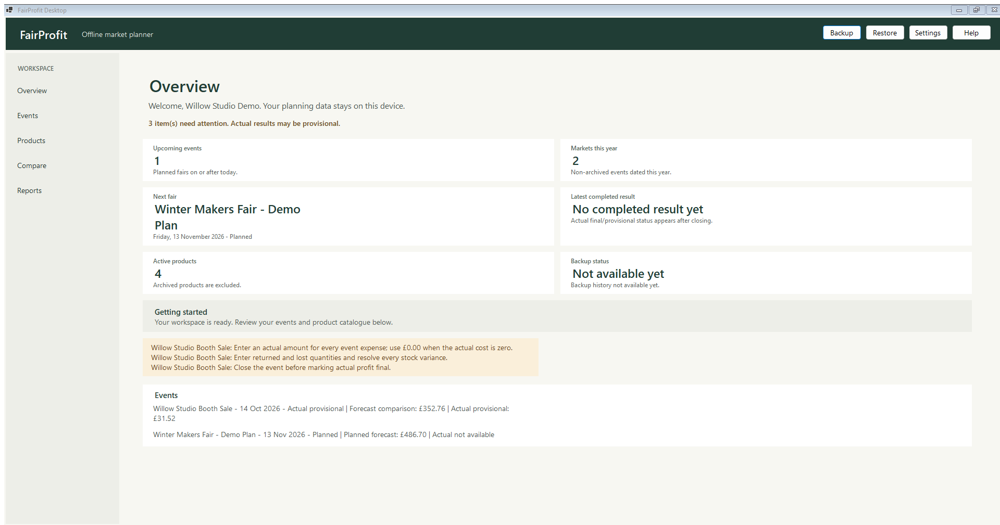
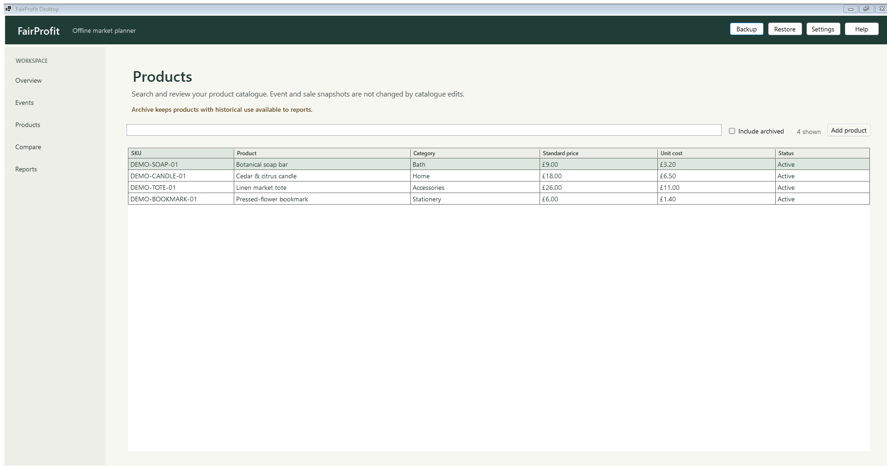
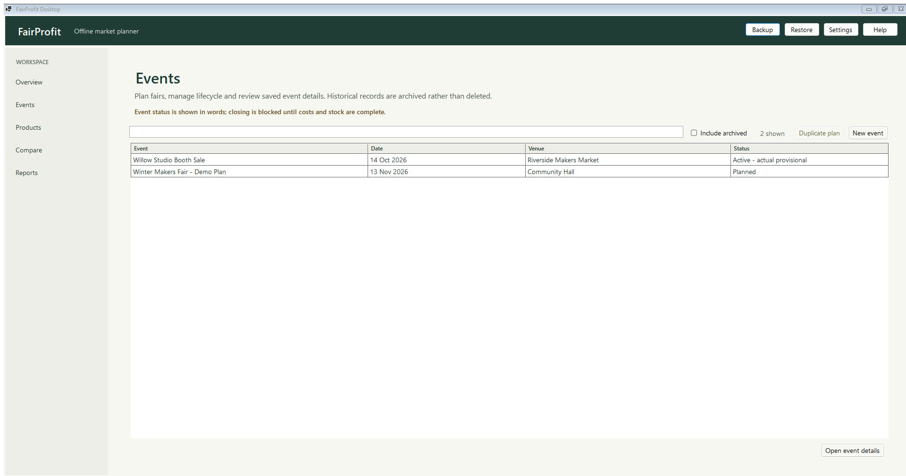
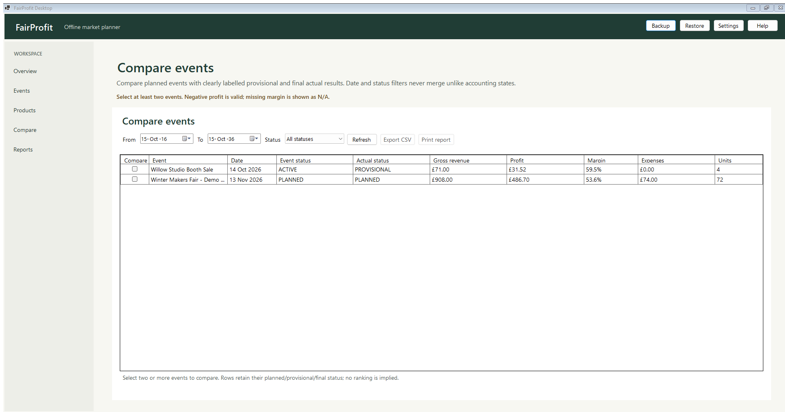

Plan the table
Add a fair, its pitch fee and other expected costs. Choose products, snapshot prices and costs, and estimate how much stock might sell.
What costs belong in a plan?Offline craft fair planner for independent makers
Your stall has a pitch fee, a boot full of stock and a day to make it work. FairProfit Desktop helps you plan craft-fair stock, account for market stall costs, record sales and compare each event in one offline Windows app.
A little less guesswork
before the van is packed.
One event, three useful moments
Craft fairs are easier to learn from when the plan and the day live in the same place. Start with your catalogue; leave with a clearer record for next time.
Add a fair, its pitch fee and other expected costs. Choose products, snapshot prices and costs, and estimate how much stock might sell.
What costs belong in a plan?Turn event stock into a category-grouped packing checklist. Keep quantities visible before the doors open.
Build a fair-day stock checklistEnter sales, refunds, actual costs and returned stock. Compare provisional or final event results without confusing an estimate for a guarantee.
Understand event profitA workbench for market days
No card terminal, marketplace or bank connection. Just the planning and records that help you run your own stall.
Keep SKUs, categories, selling prices and unit costs in one local catalogue. Event-specific price and cost snapshots keep an old fair’s maths from silently changing when you update a product.
Plan dates, venues, quantities and expenses. Review forecast gross, costs, estimated processing fees, contribution, profit and break-even at the planned sales mix.
Manually record item lines and payment methods, then correct mistakes with a reasoned void or refund. Refunds and stock returns are tracked; transactions are not silently erased.
Reconcile stock and actual expenses. Provisional figures stay labelled incomplete; a final result requires the event’s close conditions. Compare one fair with another and export CSV or print-friendly HTML.
FairProfit uses a local SQLite database under your Windows profile, with verified backup and restore tools. Keep backups somewhere safe and review them before sharing.
Close or reopen an event with a reason, review the local audit timeline, check database integrity and read actionable recovery diagnostics. Financial history is corrected with reasoned actions, not quietly erased.
Inside the Windows app
These are captures from the live FairProfit demo workspace. Example records are illustrative; they are not customer results.




Different starts. Same market-day questions.
THE SIDE-INCOME SEEKER
Put the pitch, travel and stock costs beside the takings. Review the estimate before the event, then record actuals afterwards. No promise of profit; a better view of the assumptions.
THE CLUTTER CLEARER
If you take handmade pieces or useful overstock to a boot sale, the same event-and-product records can help you keep a simple tally. It is not a general second-hand marketplace, barcode tool or online listing manager.
THE SELF-STARTER
Start with a reusable catalogue, plan one fair and learn from it. FairProfit is a single-user offline desktop planner, not accounting, tax or payment-processing software.
The situations above are illustrative use cases, not testimonials or claims about customer outcomes.
Craft fair profit calculator · a clear estimate, not a crystal ball
Change a few assumptions to see how costs and contribution affect a rough break-even revenue. The FairProfit app’s forecast is based on your own planned products, stock and event costs.
This page calculator runs in your browser and does not save or send your inputs. It is illustrative, excludes tax and overhead, and is not financial advice.
Useful before the next fair
Start with the question you have today. Each guide separates the planning estimate from the real result you can record later.
A simple event-profit formula, the costs people miss and a worked example.
Read guide ↗ BEFORE YOU PACK · 5 MINTurn products and expected quantities into a list you can check at the stall.
Read guide ↗ EVENT PLANNING · 5 MINPitch, travel, supplies, product cost and card fees, without double-counting.
Read guide ↗ DECISION GUIDE · 6 MINQuestions to ask before booking, with a scenario rather than a success story.
Read guide ↗Questions sellers ask
Clear answers about the planner, the figures and what it does not do.
For a useful operating estimate, start with sales less discounts and refunds, then subtract the cost of the products sold, recorded payment-processing fees and known event expenses. FairProfit also separates an incomplete provisional result from a final result after the event’s close checks. This is not a statutory accounting figure.
Start with the pitch fee, travel and parking, accommodation if relevant, packaging or event supplies, and other costs you expect to pay for that event. Keep unit product costs in the product-cost calculation; do not count them again as event expenses. Add actual amounts after the fair when you know them.
There is no universal number. Consider the fair’s length, your past sales, product price points, display space and how quickly you can restock. Plan expected units by product, keep the quantity brought visible, and reconcile what sold or came home. FairProfit provides a checklist; it does not predict demand.
You can manually record sales and select a payment method without an internet connection. FairProfit does not take payments, connect to a card terminal, import bank transactions or calculate an unknown card fee for you. Enter the actual fee if you know it.
No cloud sync or sign-in is provided. Business records are stored in a local SQLite database under your Windows profile. Make a verified backup and protect any backup file as carefully as the original.
No. It is an event-planning and operational profit-estimating tool. Its figures exclude VAT, owner payroll, overhead and costs you have not entered. It does not replace tax advice, statutory accounts or accounting software.
The app is designed for independent craft-fair sellers, but its catalogue and event records can also help a small seller tally handmade items or overstock at a local sale. It is not a marketplace, auction, online listing or general household decluttering app.
Yes. Craft Fair Profit is available from Microsoft Store. Open the Craft Fair Profit Store listing or use the Microsoft Store button below.
Available on Microsoft Store
Craft Fair Profit is available for Windows. View the official Store listing for current availability and installation details.
Available now · Store ID 9PNZ4GH53SWP